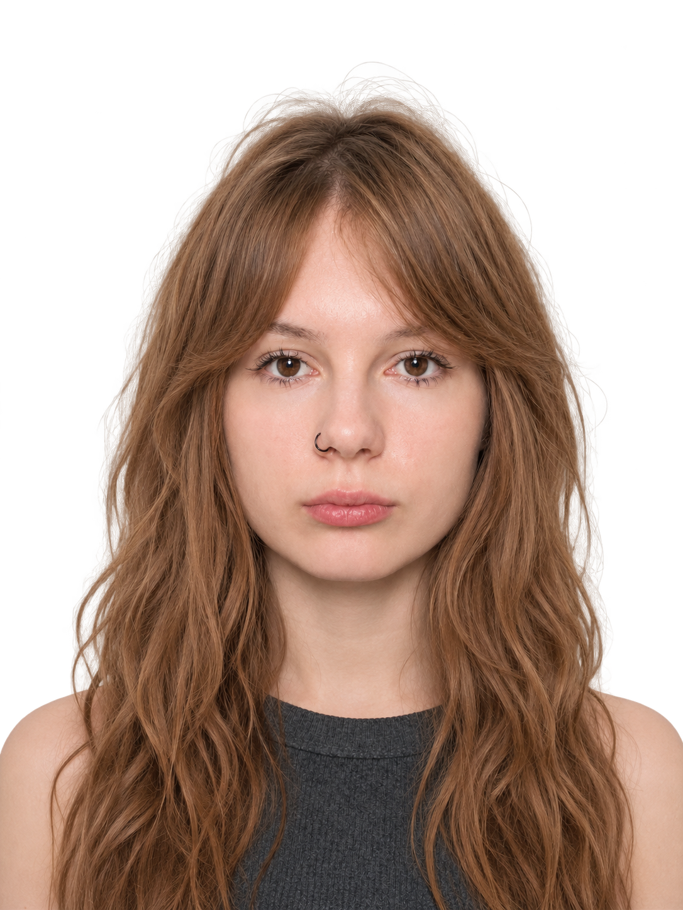

Портфолио
Ульман Алиса
Графический дизайнер
Создаю визуальные решения для брендов, печати и цифровых проектов.
Смотреть работы ↓
Независимый дизайнерМосква · Работаю по всему мируЛистайте вниз ↓
01 / Все работы
Работы.
Проекты из архива
по разделам портфолио
Демонстрационные проекты — замените их своими в файле projects.js.
02 / Немного обо мне
Образование
и опыт.
Графический дизайнер с опытом почти два года. Работаю с айдентикой, полиграфией и рекламной графикой, развиваюсь в рекламе и связях с общественностью.
Курсы черчения и архитектурного рисунка · базовый AutoCAD · ландшафтный дизайн · простые визуализации в 3D Max · нейросети и вайб-кодинг
- Adobe Illustrator
- Adobe Photoshop
- Adobe InDesign
- AutoCAD
- 3ds Max
- Figma